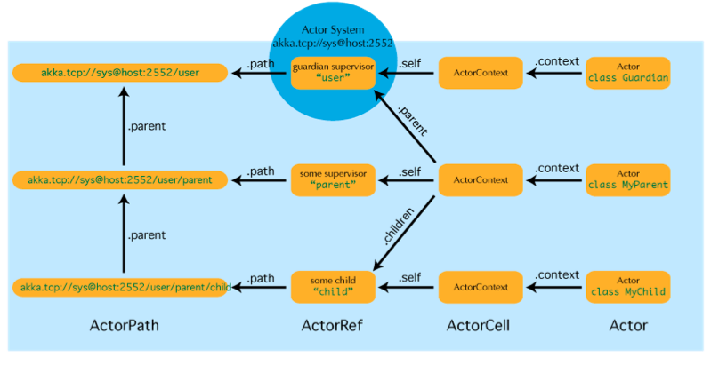
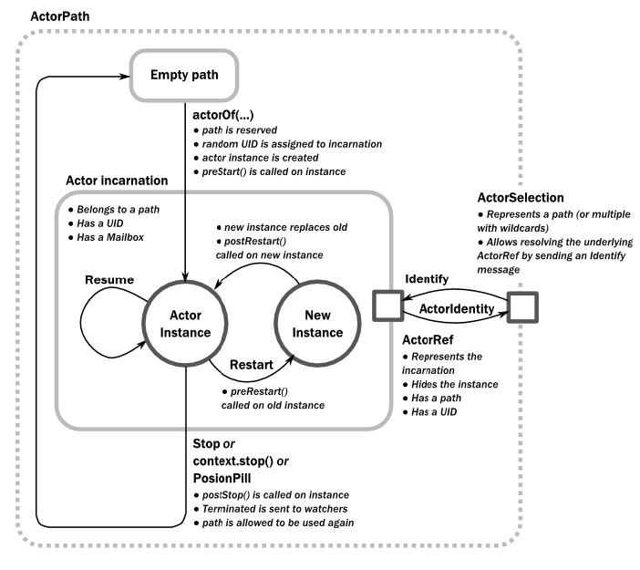
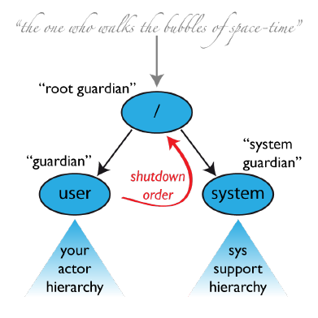

akka
Table of Contents
1 akka
- Akka : http://akka.io/
1.1 Introduction
Akka implements a unique hybrid
- Actors
- Simple and high-level abstractions for concurrency and parallelism. （actor model）
- Asynchronous, non-blocking and highly performant event-driven programming model. （reactive programming）
- Very lightweight event-driven processes (approximately 2.7 million actors per GB RAM). （little memory footprint）
- Fault Tolerance
- Supervisor hierarchies with “let-it-crash” semantics. （failover as common case）
- Supervisor hierarchies can span over multiple JVMs to provide truly fault-tolerant systems.（监控能够跨越JVM）
- Excellent for writing highly fault-tolerant systems that self-heal and never stop.
- Location Transparency
- Everything in Akka is designed to work in a distributed environment（位置透明）
- all interactions of actors use pure message passing and everything is asynchronous. （异步通信）
- Transactors
- Transactors combine actors and Software Transactional Memory (STM) into transactional actors. （actors + STM = transactors）
- It allows you to compose atomic message flows with automatic retry and rollback.
Akka can be used in different ways:
- As a library: used as a regular JAR on the classpath and/or in a web app, to be put into WEB-INF/lib. This is most likely what you want if you are building Web applications. There are several ways you can use Akka in Library mode by adding more and more modules to the stack.
- As a stand alone application by instantiating ActorSystem in a main class or using the Microkernel (Scala) / Microkernel (Java). The Akka distribution includes the microkernel. To run the microkernel put your application jar in the deploy directory and use the scripts in the bin directory. （类似插件方式启动）
NOTE(dirlt):参考akka@github的example编写的。这里使用的方式就是手工创建ActorSystem，而不是使用Akka.main指定main class来启动
object Hello extends App {
val system = ActorSystem("system")
val hello = system.actorOf(Props[Hello], "hello")
hello ! "start"
}
class Hello extends Actor {
val log = Logger.getLogger(getClass)
val sub = context.actorOf(Props[Worker], "worker")
override def preStart() {
log.debug("hello start...")
}
override def postStop() {
log.debug("hello stop...")
}
def receive = {
case "start" => sub ! "masturbation"
case s =>
println("worker done with " + s)
log.debug("shutdown system...")
context.system.shutdown()
}
}
class Worker extends Actor {
def receive = {
case s =>
println("worker working with " + s)
sender ! s
}
}
1.2 Actor System
Related Terminology, Concepts
- Concurrency vs. Parallelism
- Asynchronous vs. Synchronous
- Non-blocking vs. Blocking
- Deadlock vs. Starvation vs. Live-lock
- Race Condition
- Non-blocking Guarantees (Progress Conditions)
- Wait-freedom
- Lock-freedom
- Obstruction-freedom
- Recommended literature
- The Art of Multiprocessor Programming, M. Herlihy and N Shavit, 2008. ISBN 978-0123705914
- Java Concurrency in Practice, B. Goetz, T. Peierls, J. Bloch, J. Bowbeer, D. Holmes and D. Lea, 2006. ISBN 978-0321349606
An ActorSystem is a heavyweight structure that will allocate 1. . . N Threads, so create one per logical application.
Actors are objects which encapsulate state and behavior, they communicate exclusively by exchanging messages which are placed into the recipient’s mailbox. In a sense, actors are the most stringent form of object-oriented programming, but it serves better to view them as persons: while modeling a solution with actors, envision a group of people and assign sub-tasks to them, arrange their functions into an organizational structure and think about how to escalate failure (all with the benefit of not actually dealing with people, which means that we need not concern ourselves with their emotional state or moral issues). The result can then serve as a mental scaffolding for building the software implementation. （类似群体概念。将任务分解给群体里面每个人来完成。组织每个人的只能以及思考如何处理任务失败的情况）
Hierarchical Structure
- Like in an economic organization, actors naturally form hierarchies. One actor, which is to oversee a certain function in the program might want to split up its task into smaller, more manageable pieces. For this purpose it starts child actors which it supervises. While the details of supervision are explained here, we shall concentrate on the underlying concepts in this section. The only prerequisite is to know that each actor has exactly one supervisor, which is the actor that created it.（parent负责childrren的supervision)
- The quintessential feature of actor systems is that tasks are split up and delegated until they become small enough to be handled in one piece. In doing so, not only is the task itself clearly structured, but the resulting actors can be reasoned about in terms of which messages they should process, how they should react normally and how failure should be handled. If one actor does not have the means for dealing with a certain situation, it sends a corresponding failure message to its supervisor, asking for help. The recursive structure then allows to handle failure at the right level.
- Now, the difficulty in designing such a system is how to decide who should supervise what. There is of course no single best solution, but there are a few guidelines which might be helpful:
- If one actor manages the work another actor is doing, e.g. by passing on sub-tasks, then the manager should supervise the child. The reason is that the manager knows which kind of failures are expected and how to handle them.
- If one actor carries very important data (i.e. its state shall not be lost if avoidable), this actor should source out any possibly dangerous sub-tasks to children it supervises and handle failures of these children as appropriate. Depending on the nature of the requests, it may be best to create a new child for each request, which simplifies state management for collecting the replies. This is known as the “Error Kernel Pattern” from Erlang.
- If one actor depends on another actor for carrying out its duty, it should watch that other actor’s liveness and act upon receiving a termination notice. This is different from supervision, as the watching party has no influence on the supervisor strategy, and it should be noted that a functional dependency alone is not a criterion for deciding where to place a certain child actor in the hierarchy.
Actor Best Practices
- Actors should be like nice co-workers: do their job efficiently without bothering everyone else needlessly and avoid hogging resources.
- Do not pass mutable objects between actors. In order to ensure that, prefer immutable messages.（状态共享）
- Actors are made to be containers for behavior and state, embracing this means to not routinely send behavior within messages (which may be tempting using Scala closures) (状态共享）
- Top-level actors are the innermost part of your Error Kernel, so create them sparingly and prefer truly hierarchical systems. This has benefits with respect to fault-handling (both considering the granularity of configuration and the performance) and it also reduces the strain on the guardian actor, which is a single point of contention if over-used.（这个问题很重要，如果只有一层的话，那么最顶层也就是Error Kernel层，需要处理大量消息，容易造成冲突）
Blocking Needs Careful Management
- The non-exhaustive list of adequate solutions to the “blocking problem” includes the following suggestions:
- Do the blocking call within an actor (or a set of actors managed by a router [Java, Scala]), making sure to configure a thread pool which is either dedicated for this purpose or sufficiently sized.
- Do the blocking call within a Future, ensuring an upper bound on the number of such calls at any point in time (submitting an unbounded number of tasks of this nature will exhaust your memory or thread limits).
- Do the blocking call within a Future, providing a thread pool with an upper limit on the number of threads which is appropriate for the hardware on which the application runs.
- Dedicate a single thread to manage a set of blocking resources (e.g. a NIO selector driving multiple chan-nels) and dispatch events as they occur as actor messages.
An actor system manages the resources it is configured to use in order to run the actors which it contains. There may be millions of actors within one such system, after all the mantra is to view them as abundant and they weigh in at an overhead of only roughly 300 bytes per instance. Naturally, the exact order in which messages are processed in large systems is not controllable by the application author, but this is also not intended. Take a step back and relax while Akka does the heavy lifting under the hood.（每个actor对象大约只是使用300字节左右，所以可以创建大量actor对象。使用者没有办法控制message处理顺序，需要接收event-driven编程方式）
1.3 Actor Concept

Reference
- NOTE(dirlt):类似Actor对象指针，所有Actor对象操作都是通过引用来完成的。这样Actor如果重启，或者是部署在远程做通信的话，都可以以透明方式来完成
- As detailed below, an actor object needs to be shielded from the outside in order to benefit from the actor model. Therefore, actors are represented to the outside using actor references, which are objects that can be passed around freely and without restriction.
- This split into inner and outer object enables transparency for all the desired operations: restarting an actor without needing to update references elsewhere, placing the actual actor object on remote hosts, sending messages to actors in completely different applications.
- But the most important aspect is that it is not possible to look inside an actor and get hold of its state from the outside, unless the actor unwisely publishes this information itself.
State
- Behind the scenes Akka will run sets of actors on sets of real threads, where typically many actors share one thread, and subsequent invocations of one actor may end up being processed on different threads. Akka ensures that this implementation detail does not affect the single-threadedness of handling the actor’s state.（多个Actor对象可能会共享一个线程，并且Actor每次执行可能是在不同的线程上执行）
- Because the internal state is vital to an actor’s operations, having inconsistent state is fatal. Thus, when the actor fails and is restarted by its supervisor, the state will be created from scratch, like upon first creating the actor. This is to enable the ability of self-healing of the system.（如果Actor重启的话那么state会恢复到初始状态）
Behavior
- NOTE（dirlt）：Akka对FSM支持非常好而不只是简单的become/unbecome函数
- Every time a message is processed, it is matched against the current behavior of the actor. Behavior means a function which defines the actions to be taken in reaction to the message at that point in time, say forward a request if the client is authorized, deny it otherwise.
- These changes are achieved by either encoding them in state variables which are read from the behavior logic, or the function itself may be swapped out at runtime, see the become and unbecome operations.
- However, the initial behavior defined during construction of the actor object is special in the sense that a restart of the actor will reset its behavior to this initial one.
Mailbox
- The piece which connects sender and receiver is the actor’s mailbox: each actor has exactly one mailbox to which all senders enqueue their messages.
- Enqueuing happens in the time-order of send operations, which means that messages sent from different actors may not have a defined order at runtime due to the apparent randomness of distributing actors across threads. （不同sender发向同一个target到达消息的顺序不确定）
- Sending multiple messages to the same target from the same actor, on the other hand, will enqueue them in the same order.（如果是一个sender发向一个target的消息顺序是确定的）
- There are different mailbox implementations to choose from, （不同mailbox实现）
- the default being a FIFO: the order of the messages processed by the actor matches the order in which they were enqueued. This is usually a good default, but applications may need to prioritize some messages over others. （一种是默认的FIFO）
- In this case, a priority mailbox will enqueue not always at the end but at a position as given by the message priority, which might even be at the front. While using such a queue, the order of messages processed will naturally be defined by the queue’s algorithm and in general not be FIFO.（另外一种是有优先级别的mailbox)
- An important feature in which Akka differs from some other actor model implementations is that the current behavior must always handle the next dequeued message, there is no scanning the mailbox for the next matching one. Failure to handle a message will typically be treated as a failure, unless this behavior is overridden. NOTE（dirlt）：和其他actor model实现有点不太类似是，没有办法对mailbox来做scan来处理匹配的项。也就是说对于mailbox里面所有的消息都需要显式处理
1.4 Actor Lifecycle

Termination
- NOTE（dirlt）：actor终止的时候，这个actor原来内部所有的message都会流向EventStream(another special actor)作为DeadLetters，而actor消亡之后其mailbox会重定向到system mailbox, 所有发向这个system mailbox的消息也会流向EventStream作为DeadLetters
- Once an actor terminates, i.e. fails in a way which is not handled by a restart, stops itself or is stopped by its supervisor, it will free up its resources, draining all remaining messages from its mailbox into the system’s “dead letter mailbox” which will forward them to the EventStream as DeadLetters.
- The mailbox is then replaced within the actor reference with a system mailbox, redirecting all new messages to the EventStream as DeadLetters. This is done on a best effort basis, though, so do not rely on it in order to construct “guaranteed delivery”.
1.5 Supervision And Monitoring
Akka implements a specific form called “parental supervision”.
- Actors can only be created by other actors— where the top-level actor is provided by the library —and each created actor is supervised by its parent.
- Each actor is potentially a supervisor: if it creates children for delegating sub-tasks, it will automatically supervise them.
- The list of children is maintained within the actor’s context and the actor has access to it.
- Modifications to the list are done by creating (context.actorOf(…)) or stopping (context.stop(child)) children and these actions are reflected immediately.
- The actual creation and termination actions happen behind the scenes in an asynchronous way, so they do not “block” their supervisor.（对于children的创建和终止是异步完成的）
Depending on the nature of the work to be supervised and the nature of the failure, the supervisor has a choice of the following four options:（监控发现失败的话通常会采取下面几种策略）
- Resume the subordinate, keeping its accumulated internal state（恢复）
- Restart the subordinate, clearing out its accumulated internal state（重启）
- Terminate the subordinate permanently（终止）
- Escalate the failure, thereby failing itself（向上传递）
Each supervisor is configured with a function translating all possible failure causes (i.e. exceptions) into one of the four choices given above; notably, this function does not take the failed actor’s identity as an input. It is quite easy to come up with examples of structures where this might not seem flexible enough, e.g. wishing for different strategies to be applied to different subordinates. At this point it is vital to understand that supervision is about forming a recursive fault handling structure. If you try to do too much at one level, it will become hard to reason about, hence the recommended way in this case is to add a level of supervision. Considering that there is only one such strategy for each actor, this means that if different strategies apply to the various children of an actor, the children should be grouped beneath intermediate supervisors with matching strategies, preferring once more the structuring of actor systems according to the splitting of tasks into sub-tasks. （supervisor处理失败函数并不能够是被actor的身份，所以不能够根据actor身份来选择不同的处理策略。如果确实有需求的话，那么需要考虑增加层级，引入间接的actor来分别管理它们）

An actor system will during its creation start at least three actors, shown in the image above.
- /user: The Guardian Actor
- The actor which is probably most interacted with is the parent of all user-created actors, the guardian named "/user".
- Actors created using system.actorOf() are children of this actor. This means that when this guardian terminates, all normal actors in the system will be shutdown, too.
- It also means that this guardian’s supervisor strategy determines how the top-level normal actors are supervised. Since Akka 2.1 it is possible to configure this using the setting akka.actor.guardian-supervisor-strategy, which takes the fully-qualified class-name of a SupervisorStrategyConfigurator.（可以配置这个guardian的策略）
- When the guardian escalates a failure, the root guardian’s response will be to terminate the guardian, which in effect will shut down the whole actor system.（root guardian默认策略是shutdown whole system)
- /system: The System Guardian
- This special guardian has been introduced in order to achieve an orderly shut-down sequence where logging re-mains active while all normal actors terminate, even though logging itself is implemented using actors. This is realized by having the system guardian watch the user guardian and initiate its own shut-down upon re-ception of the Terminated message.（system guardian管理了类似logging这样的actor，通过监控user guardian Termianted信息，如果user guardian actor结束的话那么system guardian也会结束）
- The top-level system actors are supervised using a strategy which will restart indefinitely upon all types of Exception except for ActorInitializationException and ActorKilledException, which will terminate the child in question. All other throwables are escalated, which will shut down the whole actor system.
- /: The Root Guardian
- Since every real actor has a supervisor, the supervisor of the root guardian cannot be a real actor. And because this means that it is “outside of the bubble”, it is called the “bubble-walker”.
- This is a synthetic ActorRef which in effect stops its child upon the first sign of trouble and sets the actor system’s isTerminated status to true as soon as the root guardian is fully terminated (all children recursively stopped)
Lifecycle Monitoring
- In contrast to the special relationship between parent and child described above, each actor may monitor any other actor. （没有直接parent-child关系的actor也能够相互监控）
- Since actors emerge from creation fully alive and restarts are not visible outside of the affected supervisors, the only state change available for monitoring is the transition from alive to dead. （但是之能够监控从alive->dead这个过程）
- Monitoring is thus used to tie one actor to another so that it may react to the other actor’s termination, in contrast to supervision which reacts to failure.（而不能够监控failure的情况）
- Lifecycle monitoring is implemented using a Terminated message to be received by the monitoring actor, where the default behavior is to throw a special DeathPactException if not otherwise handled. （通过监控Terminated信息来观察）
- In order to start listening for Terminated messages, invoke ActorContext.watch(targetActorRef). To stop listening, invoke ActorContext.unwatch(targetActorRef)
- One important property is that the mes-sage will be delivered irrespective of the order in which the monitoring request and target’s termination occur, i.e. you still get the message even if at the time of registration the target is already dead.（和时间顺序无关）
Monitoring is particularly useful if a supervisor cannot simply restart its children and has to terminate them, e.g. in case of errors during actor initialization. In that case it should monitor those children and re-create them or schedule itself to retry this at a later time. Another common use case is that an actor needs to fail in the absence of an external resource, which may also be one of its own children. If a third party terminates a child by way of the system.stop(child) method or sending a PoisonPill, the supervisor might well be affected.
One-For-One Strategy vs. All-For-One Strategy
There are two classes of supervision strategies which come with Akka: OneForOneStrategy and AllForOneStrategy. Both are configured with a mapping from exception type to supervision directive (see above) and limits on how often a child is allowed to fail before terminating it. The difference between them is that the former applies the obtained directive only to the failed child, whereas the latter applies it to all siblings as well. Normally, you should use the OneForOneStrategy, which also is the default if none is specified explicitly.（前面只是处理失败的child，而后面处理所有的child包括失败和非失败的）
The AllForOneStrategy is applicable in cases where the ensemble of children has such tight dependencies among them, that a failure of one child affects the function of the others, i.e. they are inextricably linked. Since a restart does not clear out the mailbox, it often is best to terminate the children upon failure and re-create them explicitly from the supervisor (by watching the children’s lifecycle); otherwise you have to make sure that it is no problem for any of the actors to receive a message which was queued before the restart but processed afterwards.（主要针对各个children之间存在联系的情况）
1.6 Message Order and Delivery Guarantees
Supervision related parent-child communication happens by special system messages that have their own mailboxes separate from user messages. This implies that supervision related events are not deter-ministically ordered relative to ordinary messages. In general, the user cannot influence the order of normal messages and failure notifications.